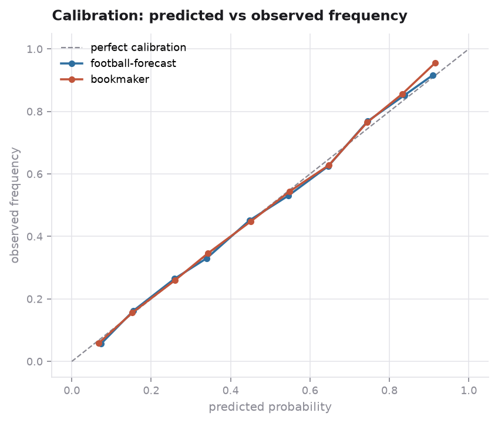
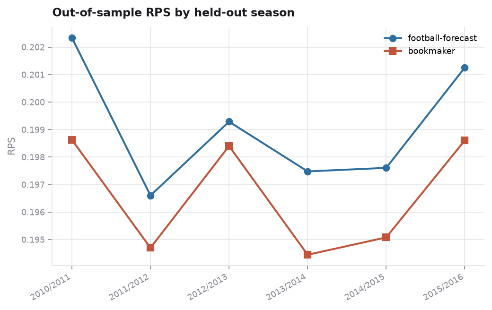

The result
Accuracy against the baseline for each task
A football accuracy figure means nothing on its own, so each task is shown with the naive baseline for that same task and the bookmaker as the upper reference.
| Task | Baseline | This model | Bookmaker |
|---|---|---|---|
| Three-way, home, draw or away | 45.5% | 52.3% | 53.0% |
| Home win versus anything else | 54.5% | 64.2% | 65.3% |
| Decided matches, draws removed | 61.0% | 70.0% | 70.9% |
| Matches the model calls at over 80%, 4% of fixtures | - | 85.6% | - |
Accuracy is the wrong headline. It keeps only the top guess, so 34/33/33 and 90/5/5 score the same when the favourite wins. Predict a home win every time and you match the base-rate forecast on accuracy, 45.9% against 45.6%. You also score a log loss of 18.7 against 1.07. The metric here is the ranked probability score. It uses the whole distribution and respects the ordering of outcomes.

Feature contributions
Squad ratings carry the most signal
Features are grouped into blocks that switch off independently, so each block's contribution is measured rather than assumed.
| Feature set | RPS | Accuracy |
|---|---|---|
| Head-to-head and promotion context | 0.2126 | 48.9% |
| Rolling form | 0.2065 | 50.3% |
| Dixon-Coles goal model | 0.2032 | 51.5% |
| Elo ratings | 0.2021 | 51.7% |
| FIFA ratings of the starting eleven | 0.2011 | 52.3% |
| Gradient boosting on all features | 0.1996 | 52.4% |
| Neural net with learned team embeddings | 0.1994 | 52.2% |
| The two averaged | 0.1991 | 52.3% |
| Bookmaker odds, run through a model | 0.1981 | 52.7% |
| Bookmaker odds, used directly | 0.1967 | 53.0% |
Notes
- Squad ratings are the strongest single block, ahead of Elo and recent form. The starting elevens and the player ratings were both already in the dataset.
- Match-event features add nothing: 0.1996 with them, 0.1997 without. The data audit below explains why.
- Passing the bookmaker's own probabilities through a model makes them worse: 0.1981 against the market's 0.1967. The closing line is already efficient, so the model only adds noise. This is worth knowing before feeding odds to a classifier and reporting the accuracy as a modelling result.

Two model classes
Boosting ranks better, embeddings calibrate better
Elo compresses a club to one number and Dixon-Coles to two. Neither can express a matchup, meaning the idea that one side is awkward for another beyond what their ratings predict. A network with a learned vector per club can. It sees both vectors, their difference, and their elementwise product.
| Model | RPS | Accuracy | Calibration error |
|---|---|---|---|
| Gradient boosting | 0.1999 | 52.3% | 0.0100 |
| Team-embedding network | 0.1995 | 52.2% | 0.0047 |
| The two averaged | 0.1991 | 52.3% | 0.0063 |
The network is worse at picking winners and twice as well calibrated. Averaging the two at equal weight keeps both properties, and that is the best model here. The weight is fixed rather than tuned on purpose. Sweeping it found an optimum between 0.4 and 0.75, but picking from that range would be fitting a hyperparameter to the held-out seasons.
The embeddings do not encode club strength. Their magnitude correlates with home win rate at r = 0.01, and the largest belong to mid-table sides like Cagliari and Middlesbrough rather than Barcelona. That is expected. Elo, squad ratings and Dixon-Coles already supply strength as features, so what is left for an embedding to learn is club-specific residual structure.
The ceiling
Why the model stops improving
Before the embedding network, four separate attempts to close the gap produced no improvement.
| Change | RPS | Accuracy |
|---|---|---|
| Elo, form, squad and Dixon-Coles | 0.1997 | 52.2% |
| Head-to-head, promotion, squad churn added | 0.1996 | 52.4% |
| Forty-configuration hyperparameter search | 0.1998 | 52.2% |
| Three models stacked through a meta-learner | 0.2000 | 52.3% |
| Probability calibration | 0.2013 | 51.7% |
Four failed attempts do not prove a ceiling, so the remaining gap was broken down by context.
| Partition | Gap to the market, in RPS |
|---|---|
| Early, middle, late season | +0.0036 · +0.0026 · +0.0044 |
| Full starting eleven known, or not | +0.0030 · +0.0031 |
| Promoted team involved, or not | +0.0031 · +0.0030 |
| Market unsure, moderate, confident | +0.0036 · +0.0027 · +0.0028 |
| Across nine leagues | +0.0005 to +0.0041 |
The gap is uniform across every partition. A modelling weakness would concentrate somewhere. A model blind to team news should lose most ground late in the season and on fixtures with unknown lineups. This one does not. A constant penalty of roughly three thousandths is what a fixed information disadvantage looks like. The missing information is injuries, suspensions, motivation and money flow, and none of it is in this database. In the Eredivisie the gap is +0.0005.
The ceiling is set by the sport rather than the model. Bookmakers reach about 53% on three-way football, and 55.8% in the most predictable league here. A substantially higher figure usually means draws were dropped, future information leaked in, or the baseline was wrong.

Betting returns
The model does not make money
Fractional Kelly staking on the best price across six bookmakers, on out-of-sample forecasts only.
| Minimum edge required | Bets | Return | 95% interval |
|---|---|---|---|
| None | 21,871 | -1.47% | -5.21 to +2.56 |
| 5% | 15,833 | -1.42% | -5.34 to +2.85 |
| 10% | 11,326 | -1.59% | -5.92 to +2.75 |
| 20% | 5,818 | -3.85% | -11.22 to +4.06 |
The no-skill return is -2.83%. That is what a bettor loses to the margin when shopping the best of six books. Losing 1.4% means the model converts about half the margin into edge, but does not clear it. The full sweep is shown because picking one favourable threshold would make almost any strategy look profitable.

Data quality
Three problems in the source data
40% of the event feeds are empty
The shots-on-target column is non-null for 54.7% of matches. But 40.5% of those hold the stub <shoton />, which parses without error and returns zero. That records roughly 5,800 ordinary matches, averaging 1.54 home goals, as having no shots taken. Usable coverage is 32.6%.
The feeds carry little signal where they do exist
Measured against a control (the goal feed, which reconciles with the scoreline at r = 0.96), shot difference explains goal difference at only r = 0.13, corners at 0.07. Possession, at 0.24, is the only informative feed. This is why the event block is switchable rather than assumed useful.
A bug in the odds conversion
An earlier version of this analysis converted odds to probabilities by overwriting the columns in place:
df[home] = (1/df[home]) / (1/df[home] + 1/df[draw] + 1/df[away])
df[draw] = (1/df[draw]) / (1/df[home] + ...) # home is a probability nowBy the second line the home column holds about 0.45, not odds of 2.20, and its reciprocal re-enters the denominator. The triples sum to 0.573 instead of 1.0. The away probability drops to 0.021 against a correct 0.281. That affected twenty of the thirty odds features. A regression test now covers it.
Method
How it is evaluated
- Walk-forward validation. Each held-out season is predicted by a model trained only on the seasons before it. A random split across eight chronological seasons trains on 2016 matches to predict 2010 ones.
- Leakage is checked by tests. The suite rewrites the last twenty scorelines and asserts no earlier Elo rating changes. It rewrites a match's own result and asserts its pre-match form does not move. And it verifies against the real database that no player rating used by a match is dated on or after it.
- Dixon-Coles bivariate Poisson. Modelling the scoreline rather than the result means draws come from the diagonal, instead of being learned against a 25% base rate. Over-under, both-teams-to-score and clean-sheet probabilities are all sums over the same matrix.
- Proper scoring throughout. Ranked probability score, log loss, Brier and calibration error, with the bookmaker as the reference forecast.
Python, LightGBM, scikit-learn and SciPy, with 38 tests, linting and CI. Every number above is reproducible from the command line.
uv run football-forecast fetch # 313 MB, checksum-verified
uv run football-forecast build # parse feeds, tune Elo, build features
uv run football-forecast backtest # walk-forward evaluation
uv run football-forecast audit # reproduce and re-score the earlier version